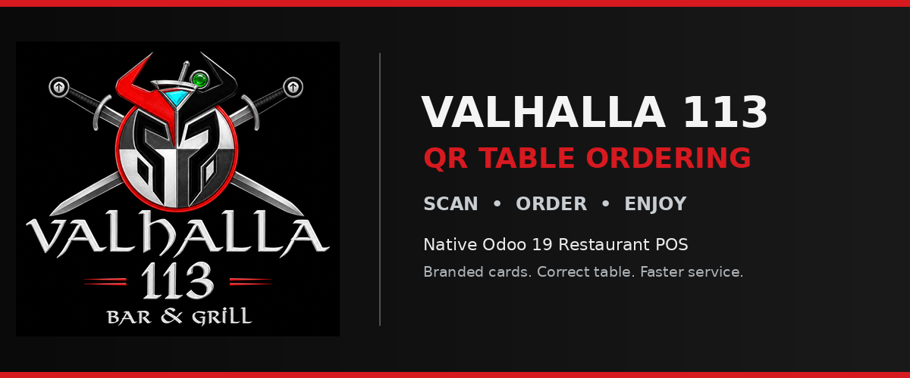
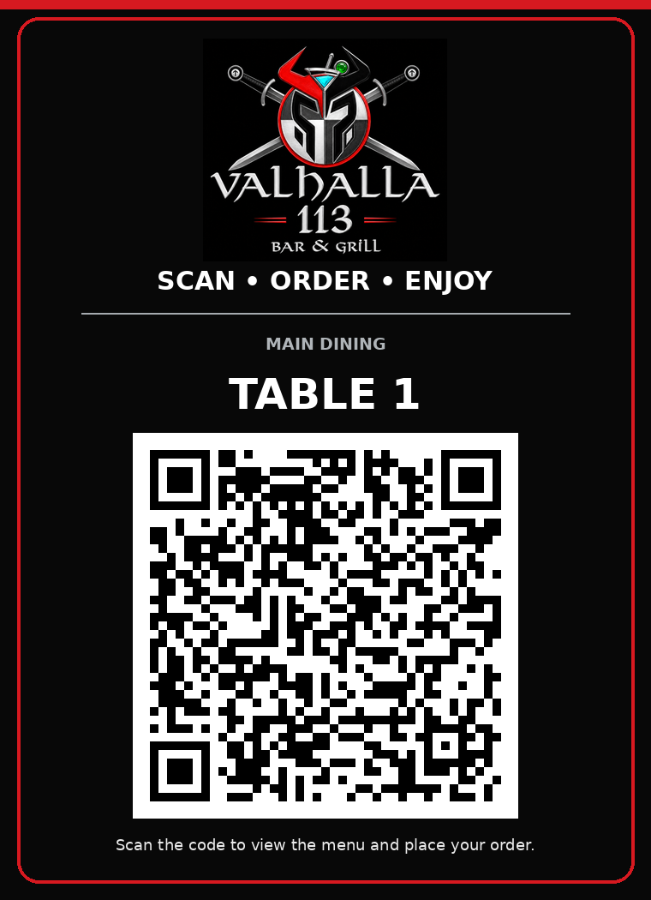

A focused Odoo 19 addon that extends the native Restaurant POS and Self Order flow with branded, printable table QR cards and dependable floor-plan table assignment.
Generate a secure native Odoo self-order link for every selected table.
Guests browse the POS menu and submit from their own mobile device.
The draft order reaches the matching restaurant table for staff payment.
